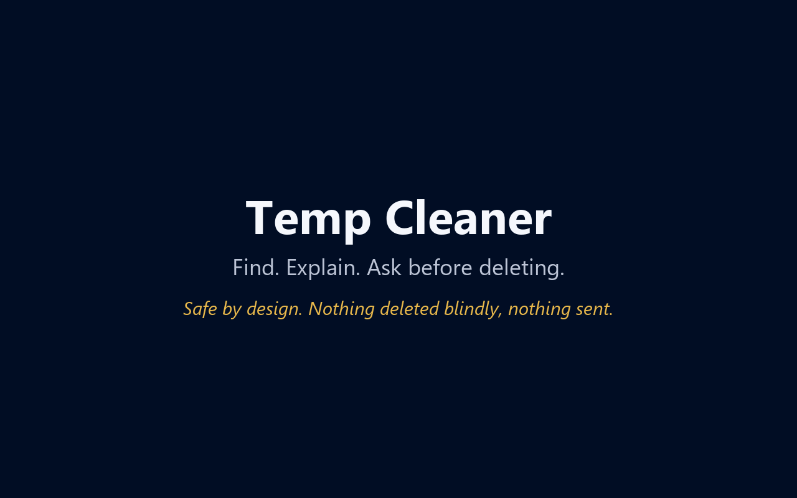
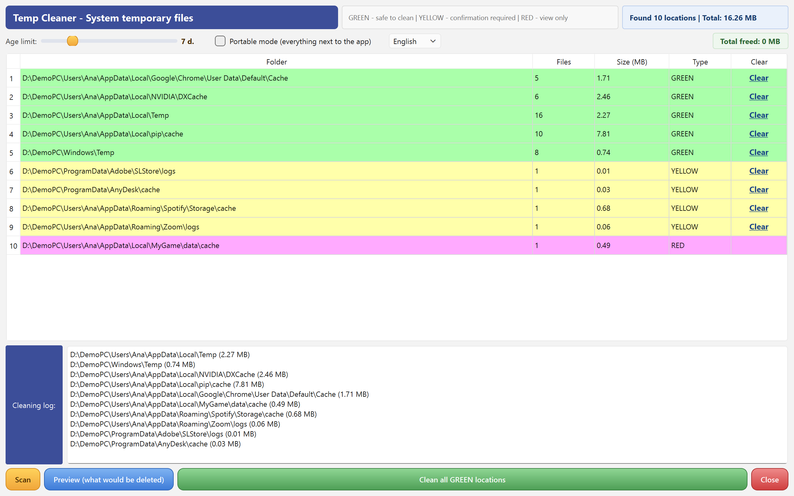
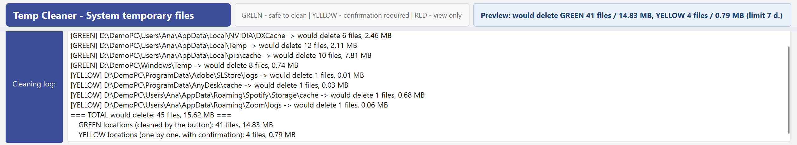
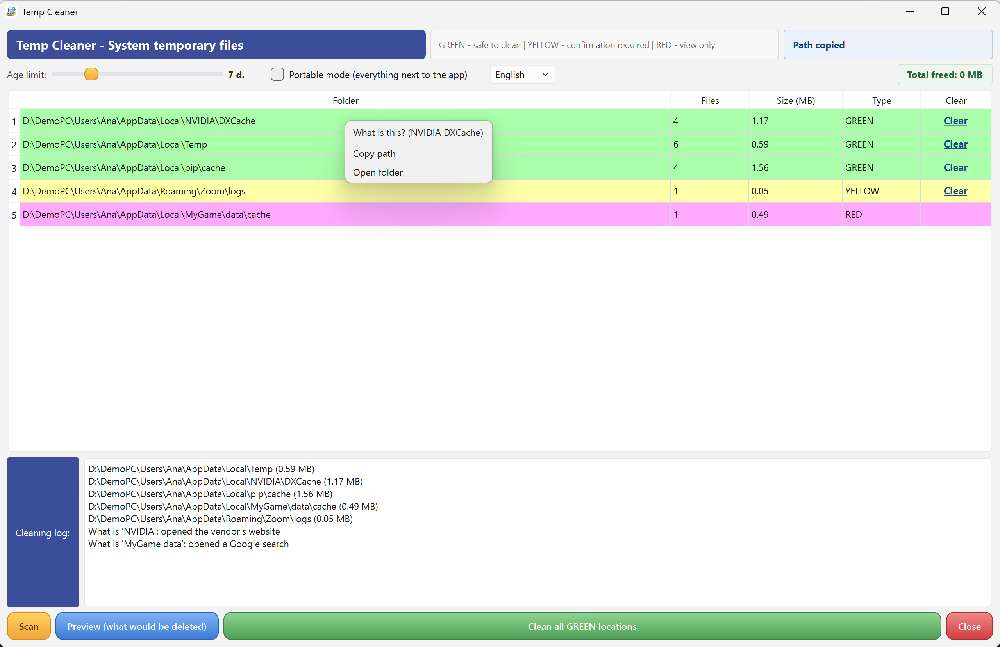

Frees real disk space. Shows its reasoning before it deletes.
Find. Explain. Ask before deleting.

System temp and well-known caches — safe to clean automatically.
Heuristically found temp/cache/log folders of your apps — cleaned only one by one, with confirmation.
Paths that look like real data (models, backups, node_modules…) — view only. The cleaning button simply does not exist for them.
A dry run shows exactly what would be deleted, per location, before anything is touched.
Every file left behind is logged with a reason: too fresh, locked, or a link into real data. No silent decisions.
Only files older than your limit (1–30 days) are ever deleted — today's work is automatically safe.
Unknown folder in the list? The app explains what program it belongs to — and can hand the question to an AI for a live answer.
English / Lithuanian in one exe. No installation, no ads, no telemetry.
MIT license. Source code, tests and a public comparison test protocol on GitHub.
Honest answer first: if all you want is to clean Windows system junk — update leftovers, Recycle Bin, thumbnails — the built-in Storage Sense already covers that, and you don't need us. This program exists for what Storage Sense does not see: the cache jungles of your applications — browsers, Electron apps, package managers, sync clients. And one more honest fact: cleaning temp files is disk hygiene, not a speed boost. We free space; we do not promise a faster PC.



This program was written by Claude (an AI by Anthropic) as a gift, with live testing by Robertas — a furniture designer, not a programmer. Because the code is open, you can ask Claude about it directly: the “?” menu in the app explains how. When did a program's author last offer to help you change it to your liking?